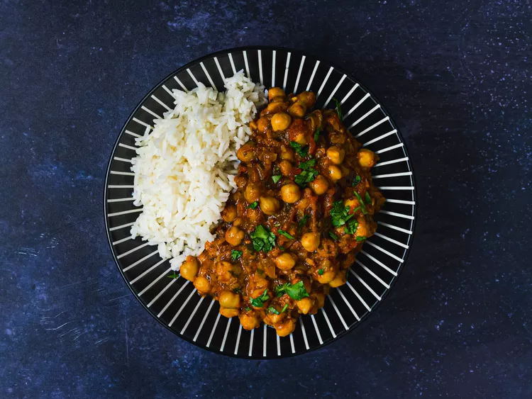

Home
Channa Masala

Plump chickpeas bathed in a spicy and tangy tomato sauce.
A healthy, cheap and quick winter meal
As one of the most popular dishes in the world, both in
and out of India and Pakistan, channa masala or chana masala,
chole masala, or chholay, depending on where you're from
chickpeas cooked in a spicy and tangy tomato-based sauce.
Of course, if you ask two people what constitutes an authentic
version of the dish, you may get two opposite answers.
For this recipe you will need:
- 4 cloves of garlic
- ginger
- one large onion
- chickpeas
- canned tomatoes
- Masala spice
Directions
- Sautee garlic, giger and onion.
- Add the masala spice and mix until well browned.
- Add the chickpeas and canned tomato, then bring to a simmer.
- Serve with rice and top with coriander.